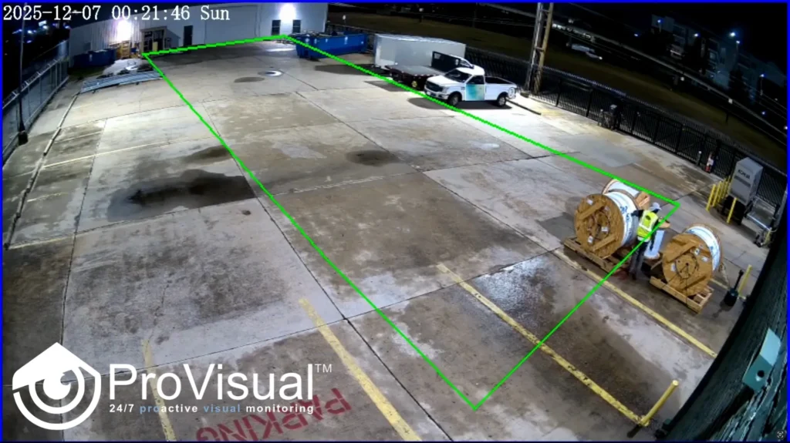

Security by APS FAQ resource
Commercial security questions, answered clearly.
A practical FAQ guide for New Orleans-area businesses evaluating alarm monitoring, video surveillance, access control, fire protection, and remote security technology.

Representative commercial-security image used for this FAQ demonstration.
All answers open by default
Commercial security FAQ.
Browse the questions below. Every accordion segment is expanded so the full resource can be read without additional clicks. The right system depends on the property and the response plan.
Commercial monitoring
An alarm system detects a condition, such as an intrusion, fire, or environmental event. Professional monitoring adds a team and a response process that can receive alerts, evaluate available information, contact authorized people, and follow the agreed response plan. The exact process depends on the system and service terms.
The response depends on the type of alarm and the plan established for the property. A monitoring team may contact designated keyholders or emergency services according to the approved protocol. Businesses should confirm how contacts, verification, dispatch, and false-alarm procedures are handled.
Many modern systems provide authorized users with remote access to live video, recorded events, alerts, doors, or other controls. Ask which features are available for your system, user permissions, and property configuration.
Yes. A system can be designed around the property layout, business hours, staff, access points, equipment, fire requirements, and desired response. A retail store, office, warehouse, school, and construction site may each need a different combination of services.
Video surveillance and ProVisual
Proactive video monitoring combines cameras, analytics, alerts, and a response process intended to identify suspicious activity and support action while an event is happening—not only record footage for later review.
AI-assisted analytics can help classify activity and focus attention on people, vehicles, or other defined events. Results depend on camera placement, lighting, system configuration, and the monitoring plan.
Some proactive monitoring systems can support live audio warnings, sirens, or other deterrence options. Ask which features are available and how they fit into the property’s response procedures.
Mobile surveillance units may be appropriate for construction sites, events, changing locations, or properties where permanent infrastructure is not yet available. A site evaluation determines the practical deployment.
Access control and fire protection
Access control can manage who enters a door, gate, building, room, or restricted area and when access is allowed. Systems may use cards, fobs, mobile credentials, PINs, or other approved methods.
In some system designs, access events and video can be reviewed together. This can help a business understand what happened at a door or gate and maintain a clearer record of activity.
APS describes monitored smoke detection, carbon monoxide detection, fire alarm systems, and related fire-protection services. Commercial requirements depend on the building, occupancy, local rules, and system design.
Testing, inspection, and maintenance schedules depend on the equipment, property, applicable requirements, and service agreement. Businesses should follow the manufacturer’s guidance and their provider’s documented schedule.
Planning and service
Ask about installation, service calls, maintenance, monitoring, technical support, training, and what happens when equipment needs to be replaced.
Consider future doors, locations, employees, tenants, cameras, fire systems, and changes to the building or business.
Request a clear explanation of equipment, installation, monitoring, response procedures, warranties, user access, contract terms, and ongoing support.
Local service questions
APS is headquartered in Metairie, Louisiana and publicly describes service across Greater New Orleans, the Northshore, Gulf Coast regions, and parts of Mississippi. Confirm current availability for your property during the consultation.
APS describes business-security services for companies of different sizes, including shops, restaurants, offices, warehouses, and commercial spaces. The recommended system should be sized to the property and operating needs.
Be ready to describe the property type, locations, business hours, current equipment, access points, recurring concerns, internet or power limitations, and who should be involved in the response plan.
Your next step
Still have questions about the right security system?
Talk with Security by APS about your property, current concerns, and the monitoring or protection plan that may fit your business.
Request a free security evaluationThis FAQ page is a demonstration concept based on Security by APS’s published services and public FAQ content. Confirm product availability, regulatory requirements, service scope, and final claims before publishing as a live client page.